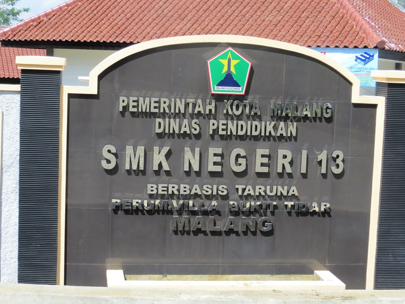
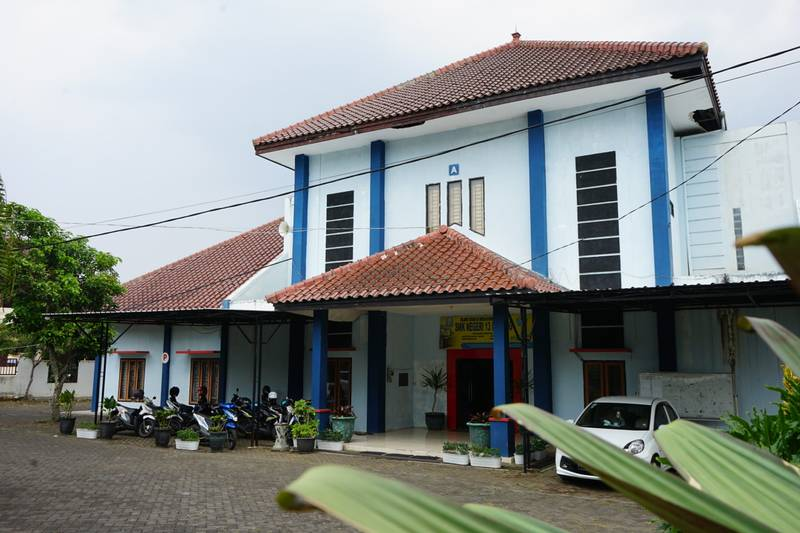
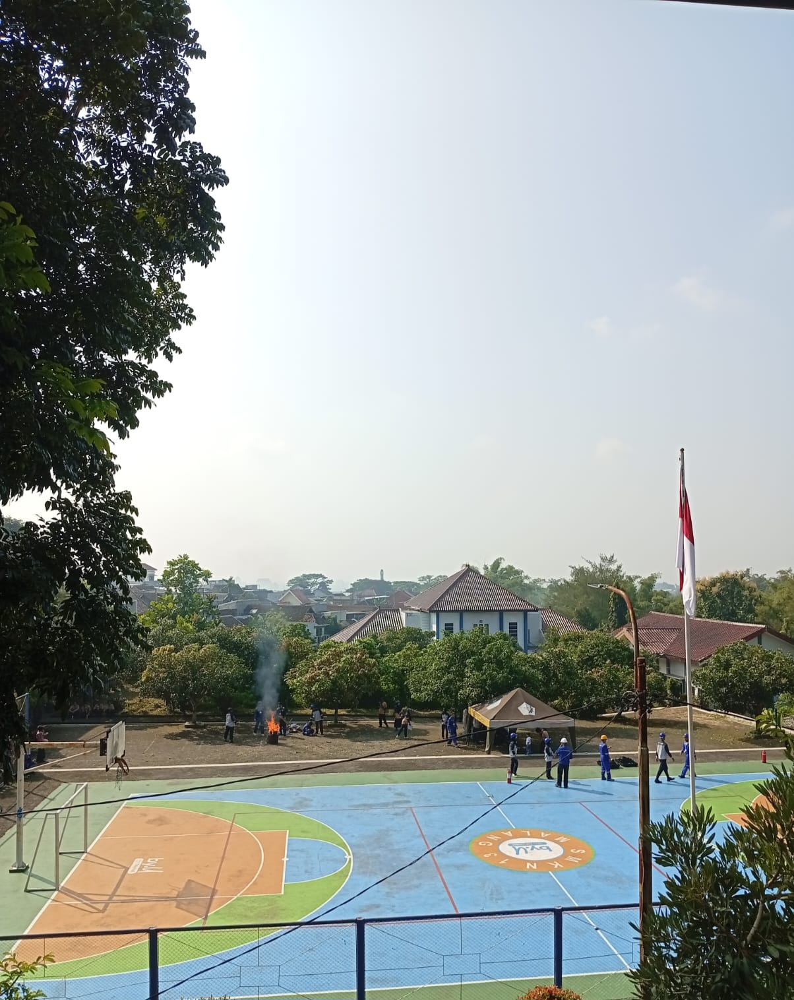
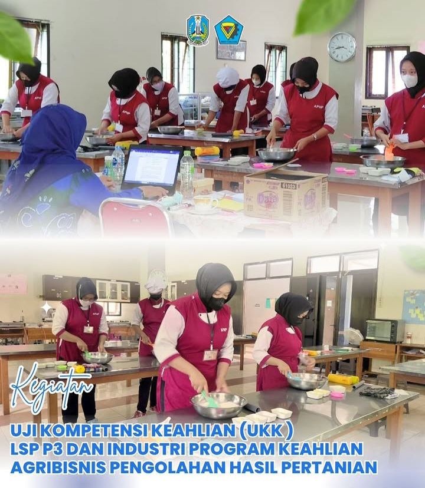

Pusat pendidikan kejuruan yang mencetak lulusan kompeten untuk masa depan global di Kota Malang.
Kenali Kami Lebih Dekat"Menghasilkan lulusan yang beriman, bertaqwa, kompeten di bidangnya, mandiri, serta peduli terhadap lingkungan hidup."
Meningkatkan ketaqwaan kepada Tuhan Yang Maha Esa dan budi pekerti luhur.
Menyelenggarakan pembelajaran berbasis kompetensi yang selaras dengan kebutuhan dunia industri.
Mengembangkan jiwa kewirausahaan dan kemandirian bagi seluruh warga sekolah.
Menanamkan kesadaran dan kepedulian terhadap kelestarian lingkungan sekitar.
Desain Komunikasi Visual
Siswa belajar desain grafis, fotografi, videografi, dan ilustrasi digital menggunakan software standar industri.
Nautika Kapal Niaga
Mempelajari navigasi, hukum maritim, dan keselamatan pelayaran untuk menjadi perwira kapal profesional.
Pengolahan Hasil Pertanian
Teknologi pengolahan bahan mentah menjadi produk pangan jadi berkualitas tinggi dan pengawasan mutu.
Kesehatan & Medis Dasar
Memberikan pelayanan kesehatan dasar, anatomi, dan perawatan pasien sesuai standar rumah sakit.



